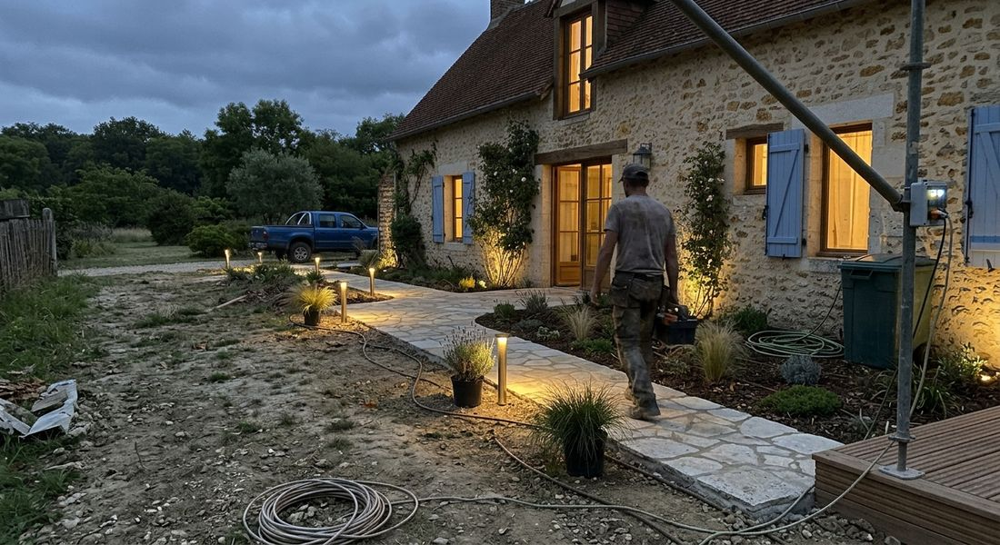

Zone d’intervention
Dans toutes les Yvelines, au plus près de chez vous.
Basée à Montigny-le-Bretonneux, l’équipe de Biovert Jardins se déplace chez les particuliers, les copropriétés et les entreprises.

YvelinesDepuis Montigny-le-Bretonneux
Communes
Nos principaux secteurs
Nous accompagnons les particuliers et les professionnels à :
VersaillesRambouilletChevreuseMaurepasPoissySaint-Cyr-l’ÉcoleMontigny-le-BretonneuxMarly-le-RoiÉlancourtLe ChesnayJouars-PontchartrainGuyancourtNoisy-le-RoiPlaisirCoignières
Nous pouvons aussi intervenir dans les Yvelines et les départements limitrophes. Votre commune n’apparaît pas ? Appelez-nous.
Infos pratiques
Nous trouver, nous joindre.
- Service commercial06 19 58 28 76
- HorairesDu lundi au vendredi, 8h – 18h
- Adresse12 avenue des Prés, 78180 Montigny-le-Bretonneux
- Service à la personneDéclarée le 24/09/2014 · N° SAP804467553
Contact
Une question sur votre secteur ?
Appelez-nous ou écrivez-nous : nous vous dirons si nous pouvons nous déplacer.
- 06 19 58 28 76
- contact@biovertjardin.com
- 12 avenue des Prés, 78180 Montigny-le-Bretonneux